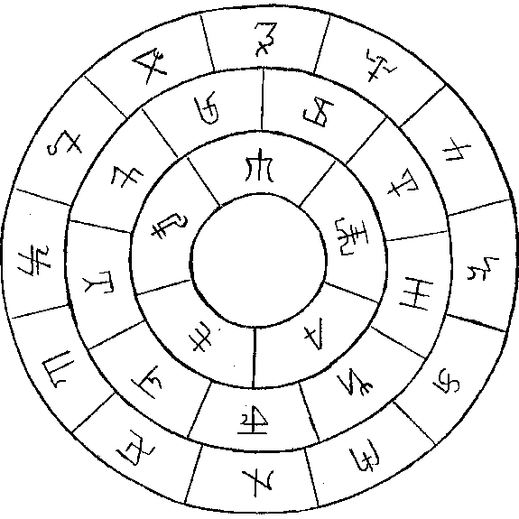
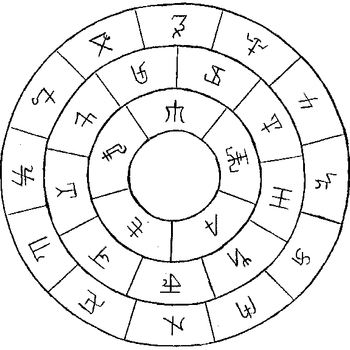

The following is a copy of the alphabet created by Rhaven from the zee-list for his own use in magick. He asked that I scan it and place it online for him. Included is the letter he sent to me regarding its creation, symbolism, and use, and the graphics of the alphabet and the sigil wheel that were included with the letter.
--Fenwick
Fenwick,
Well, it took me a damn while but I finally got it off. This is the sigil wheel I wanted you to scan for me, I hope you don't mind but I wanted to get a pic of my alpha too so I dropped it in there. Either one or both of the circles scanned will do, and of course you're free to use these personally, or distribute them, or turn it all into a nifty word game for your grandma.
There's only a little symbolism I kept in mind while making; I'm heavily attached to symbolism and planetary/elemental forces, and the 26 letters of our alpha broke down perfectly... five on the inner circle for vowels and the four elements plus spirit, nine on the middle for sun moon mercury venus mars saturn neptune uranus, and twelve on the outer for the astrological houses aries thru pisces. I left the center openon this particular version, you can put anything that pleases one there with a little immagination and a copier. The symbolism is a bit academic but I mostly watned something that was universal somehow, and it jsut kind of all came out anyway... primarily I wanted any damn system that I didn't have to translate multiple letters into one or one into multiples, or substitute vowels that don't exist. I haven't seen any of these other than the "Hermetic Rosy Cross" or whatever, it's in D.M. Kraig's Modern Magick, and of course the old square system for sigils.
My alpha is a bit complex for common use but it's good for talismans and inscriptions. Hope you get something you like out of all this. Drop me an e-mail if you have any questions. I really appreciate your trouble, thanks again.
Per aspera ad astra,
-Rhaven
